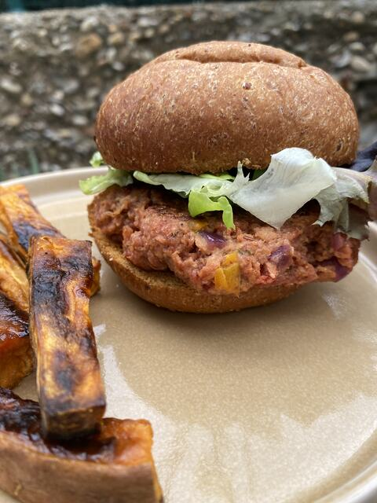

Receta · Plato principal · 15 min aprox.
Hamburguesa Vegana
Hamburguesa Vegana: una idea fácil con Mezcla de Picada vegetal para una comida o una cena, en unos 15 minutos. Lleva pan de Hamburguesa Low Carb, 200ml de agua y vegetales a gusto. Mezcla de Picada vegetal aporta 11,4 g de proteína por cada 100 g de producto terminado.
8 ingredientes6 pasos15 min aprox.
 Hecha conMezcla de Picada vegetal 150 g150 g · rinde 450 gVer producto
Hecha conMezcla de Picada vegetal 150 g150 g · rinde 450 gVer productoIngredientes
- Pan de Hamburguesa Low Carb
- 100g de Mezcla de Picada Vegetal
- 200ml de agua
- Vegetales a gusto
- Aceite de oliva
- Sal
- Comino en polvo
- Mayonesa o toppings a gusto
Información nutricional1 hamburguesa: 30g proteína, menos de 2g azúcares, 11g fibra
Preparación
- 01Picar los vegetales y cocinarlos en sartén con aceite de oliva, sal y comino
- 02Mezclar 100g de Picada Vegetal con 200ml de agua y los vegetales cocidos
- 03Mezclar hasta unificar y llevar a la nevera 30 minutos para hidratar
- 04Formar 2 hamburguesas con la mezcla
- 05Tostar el Pan de Hamburguesa Low Carb
- 06Montar con los toppings elegidos